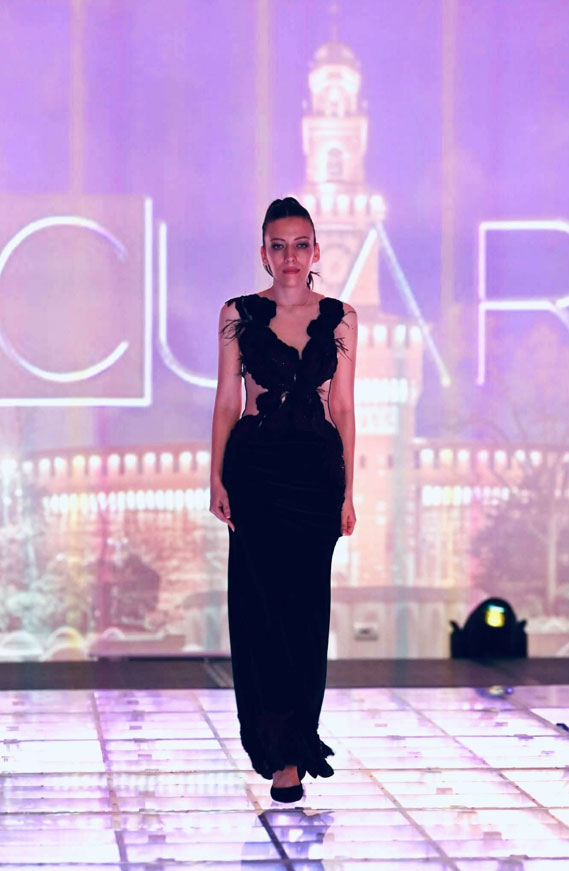
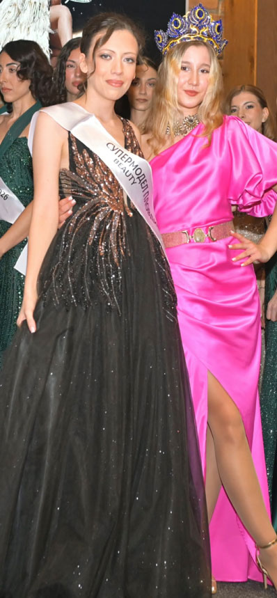
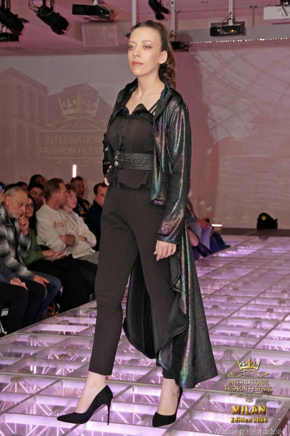
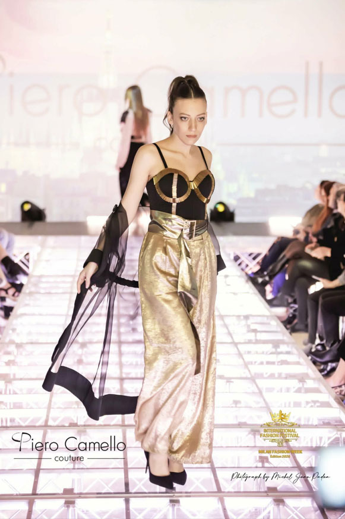

Профил, изграден с постоянство
Анастасия Събева е модел, чийто път в модната индустрия започва още в тийнейджърска възраст. На 15 години участва в първия си конкурс и печели трето място — начало, което разпалва амбиция, а не я гаси.
Следват второ и трето място в последователни конкурси, участие в Мис Туризъм 2015 и още две надпревари същата година. Всяка поява е нова репетиция за голямата сцена.
Playboy, Супер Модел и Мис Елеганс
2017 г. е повратна точка — участието в Мис Плеймейт поставя Анастасия на картата на сериозната модна сцена. През 2017 г., тя е на корицата на Playboy и с личен календар — признание, което говори само за себе си.
Титлата Супер Модел 2025 и Мис Елеганс 2025 затвърждават образа: не е въпрос на шанс, а на характер, работа и неугасваща страст към съвършенството.


Лице на организации и медии
Анастасия е избирана за лице на организации и медии — доверие, което се печели единствено с консистентност, професионализъм и визия. Нейното присъствие надхвърля фотосесията — то е послание.
Милано 2026 е логично продължение: International Fashion Festival е сцената, на която световната мода открива следващото голямо лице. Анастасия вече е там.
Дизайнер, актриса и мечтател с план
Зад обектива и зад прожектора се крие жена с конкретни цели. Анастасия иска да стане дизайнер — да създава облеклата, не само да ги носи. Актьорското майсторство е още един хоризонт, към който гледа с нескрит интерес.
По образование завършена специалност Туризъм, тя носи в себе си усещане за свят без граници — и го изразява с всяка стъпка на подиума и всяка поза пред камерата.

Следващата глава: световната сцена
Анастасия Събева не е само поредното красиво лице в модната индустрия. Тя е проект в ход — жена, която последователно, стъпало по стъпало, гради платформата, от която ще представи България пред света.
Нейното послание е просто: България има лица, способни да заемат световната сцена. Тя е едно от тях.